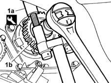
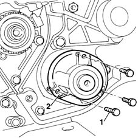
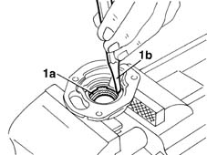
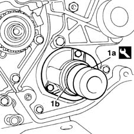

1020C10 oil seal cover on auxiliary shaft - r + r with timing belt removed and replace gaskets
- Path
- Procedures > 10 ENGINE UNIT > 1020 CRANKCASE SUMP AND COVERS > 1020C oil seal on auxiliary shaft > 1020C10 oil seal cover on auxiliary shaft - r + r with timing belt removed and replace gaskets
- Kind
- repair procedure (removal / refitting; the operation number is the code)
- Applies to
- engines: 1.6 16v; all production periods
- Interactive page
- https://sloeber94.github.io/elrnDB-fMltpl/en/#/2891203
Applies to: engines: 1.6 16v; all production periods
 Removing
Removing
 Refitting
Refitting1. Use tool (1a) to lock the gear, unscrew the retaining bolt and remove gear (1b).
 | Name | Country |
|---|---|---|
1a | Counter-torque | 1.860.765.000 |

Applies to: engines: 1.6 16v; all production periods
1. Unscrew the retaining bolts.
2. Remove the oil seal cover on the auxiliary driveshaft.

Applies to: engines: 1.6 16v; all production periods
Refitting
Removing1. Place the cover in a vice, remove sealing ring (1a) by inserting a drift in groove (1b) on the inner cover surface.

Applies to: engines: 1.6 16v; all production periods
Position the cover on the engine crankcase in the auxiliary driveshaft.
Tighten the fixing bolts to torque.
 | Fastening | Component | Ø | Value (daNm) |
|---|---|---|---|---|
- | Bolt | AUX SHAFT SEAL COVER | M6 | 1.1 |
1. Use tool (1a) to fit the new sealing ring (1b).
| Name | Country |
|---|---|---|
1a | Fitting tool | 1.860.882.000 |

Applies to: engines: 1.6 16v; all production periods
Fit the gear on the auxiliary driveshaft.
Lock the pulley using the tool and screw in the pulley retaining bolt.
| Fastening | Component | Ø | Value (daNm) |
|---|---|---|---|---|
- | Bolt | AUXILIARY SHAFT DRIVEN GEAR | M10 | 8 |